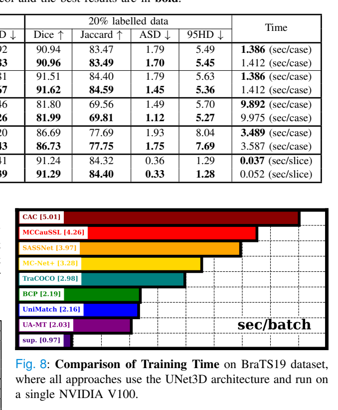

本篇未找到可可靠提取的方法流程图，请查看原文 PDF。
论文针对标注稀缺条件下的多模态医学图像分割，尤其是复杂肿瘤（形状不规则、邻近组织复杂、边界模糊）场景 [p. 1][p. 2]。作者认为：现有半监督方法多依赖自训练/协同训练或一致性约束，在复杂目标上表现有限；而多模态融合方法虽能利用互补信息，但大多面向全监督，半监督下难以有效利用无标注数据 [p. 2]。作者进一步指出两条相关路线的问题：MMCML 类方法只约束跨模态预测结果的一致性，未充分利用多模态信息；CMC 类方法用独立编码器提取模态特异特征再做融合对齐，但独立编码器会加大特征差异，导致不同模态分割精度明显不一致 [p. 2]。因此作者主张在早期编码阶段就进行多阶段特征融合与对齐，并配合模态感知增强与跨模态互学习 [p. 2][p. 3]。
输入与数据定义。 两模态数据记为 $D_a^l,D_b^l$（有标注，$M$ 例）与 $D_a^u,D_b^u$（无标注，$N$ 例，$M\ll N$），输入 $x^a,x^b\in\mathbb{R}^{H\times W\times D}$，标签 $y\in\mathbb{R}^{C\times H\times W\times D}$ [p. 3][p. 4]。框架为端到端双分支网络，两模态共享同一标注，同时输出各自预测 [p. 4]。
多阶段多模态融合（MMF）。 编码器各阶段低层特征记为 $F^a={f^a_s}{s=1}^4$、$F^b={f^b_s}{s=1}^4$；在每个编码阶段将两模态特征融合为 $F^{ab}$ 并回传至各自编码器的下一阶段，以对齐特征、减小模态差异 [p. 4]。融合层由拼接、两层卷积和一个非线性激活组成，公式为 $f^s_{fused}=F_{sigmoid}(F_{conv2}(F_{conv1}(F_{cat}(f^a_s,f^b_s))))$ [p. 4，式(3)]。注意：式(3) 与正文“融合后传回两个编码器”的具体连接方式在文中未画清，Fig. 1 仅给出总体示意 [p. 3]。
模态感知增强（MAE）。 用不同感受野的多个卷积层建模局部与全局信息，再经全局平均池化、全连接、Softmax 得到通道注意力权重：$W^a=F_{softmax}(F_{fc}(F_{gap}(\psi_1(F^a)+\psi_2(F^a))))$，其中 $\psi_1,\psi_2$ 为不同核尺寸的变换 [p. 4，式(2)]；另一模态同法处理，加权后的特征进入解码器生成输出 [p. 4]。文中未报告 $\psi_1,\psi_2$ 的具体核尺寸与通道压缩比。
对比式互学习（MCML）。 有标注数据用监督损失：$\mathcal{L}{sup}=\mathbb{E}[\mathcal{L}{CE}(f_\phi(x^a),g_\phi(x^b),y)+\mathcal{L}{DICE}(\cdot,y)]$ [p. 5，式(4)]。无标注数据先由两网络各自生成伪标签 $p^a_l=f\phi(x^a)$、$p^b_l=g_\phi(x^b)$，再最小化 $\mathcal{L}{unsup}=\mathbb{E}[|f\phi(x^a)-p^b_l|2+|g\phi(x^b)-p^a_l|2]$ [p. 5，式(6)]。关键设计是伪标签侧停止梯度：$p^a_l$ 与 $f\phi(x^a)$ 之间、$p^b_l$ 与 $g_\phi(x^b)$ 之间不回传梯度 [p. 5]。总损失 $\mathcal{L}{total}=\mathcal{L}{sup}+\alpha\mathcal{L}_{unsup}$，$\alpha$ 为跨模态约束权重 [p. 5]。
作者声称的新颖点有三：(1) 多阶段多模态特征融合，在早期编码阶段对齐低层视觉特征以降低模态差异；(2) 模态感知特征增强模块，强调重要模态特异特征、抑制无关信息；(3) 协同互学习目标，保证跨模态预测一致性与鲁棒性 [p. 2][p. 3]。我的解读：核心增量是把“早期逐阶段融合”与“预测级互学习”组合起来，并用停止梯度避免伪标签塌缩；这与 MMCML（仅预测一致性）和 CMC（独立编码器后融合）形成对照 [p. 2]。但各组件本身（通道注意力、伪标签互监督）并非全新，创新主要在组合方式与融合位置。
数据与划分。 BraTS2019：335 例四模态 MRI，本文用 T1ce 与 T2 做全肿瘤分割，随机取 250/25/60 例为训练/验证/测试；预处理为裁剪零强度区域并逐扫描 min-max 归一化 [p. 5]。NPC 私有数据：161 例放疗患者，CT（512×512，层厚 3.0 mm，像素 1.27×1.27 mm²）与 MR T2（384×384，3.0 mm，1.30×1.30 mm²），随机取 112/17/32 例；CT 转 HU 并按窗宽窗位归一化，MR T2 做 min-max，CT 与 T2 刚性配准 [p. 5][p. 6]。标注预算为 5% 与 10%，另报告 100% 全监督上界 [p. 6][p. 8]。
训练设置。 PyTorch、单张 NVIDIA A6000，从零训练；SGD，初始学习率 $1\times10^{-2}$，batch size 4，最多 60k 迭代，dropout 0.5，$\alpha=1.0$；随机裁剪 112×112×96（NPC）与 96×96×96（BraTS）[p. 6]。指标为 DSC 与 ASD [p. 6]。未报告：backbone 具体网络名、参数量、学习率调度、数据增强细节、随机种子与重复次数。
对比结果（Table 1）[p. 8]。 单模态半监督方法（MT、ICT、EM、URPC、MLRPL）按通道拼接多模态输入；多模态方法为 MMCML 与 CMC。BraTS 5%：本文 DSC 85.16±7.10、ASD 2.38±2.83，优于次优 URPC 83.14±8.93 / 3.19±3.70；MMCML 仅 75.83±17.53。BraTS 10%：本文 85.82±7.97 / 2.19±2.73，优于 URPC 84.82±9.35 / 2.33±2.57；100% 全监督为 88.35±6.3 / 1.48±1.53。NPC 5%：本文 69.33±9.16 / 2.19±1.45，URPC 为 69.03±8.57 / 2.29±1.69，差距很小；NPC 10%：本文 72.67±7.56 / 1.74±0.89，优于 ICT 71.48±6.40 / 2.17±2.33；全监督 77.03±6.35 / 1.53±0.98。需注意 Table 1 中“Ours”行在 PDF 文本里出现重复数字串，属排版/抽取伪影，应以单次数值理解，但无法从文本完全确认 [p. 8]。
消融（Table 2，BraTS 5%）[p. 8]。 基线（双分支）T1ce 68.44±14.46 / T2 79.28±10.82；加 MMF 后 T1ce 81.94±10.48（+12.5 个百分点，作者称因共享 T2 特征）、T2 82.98±9.64；再加 MAE 为 83.84±8.74 / 83.74±8.63，但 ASD 反而升至 3.66±4.25 / 3.91±4.44；MMF+MCML 为 83.96±8.02 / 84.43±7.56，ASD 2.62±3.54 / 2.70±3.53；三者全用达 85.16±7.10 / 84.95±7.25，ASD 2.38±2.83 / 2.67±3.09。该消融说明 MMF 贡献最大，MAE 与 MCML 主要提升 DSC，MAE 单独加入时 ASD 变差，作者未解释此现象。
定性结果。 Fig. 2 展示 10% 与 5% 标注下与 SOTA 的视觉对比，作者称本文更贴合真值、能捕捉更多边缘细节并分割分散 NPC 病灶 [p. 6][p. 7]；但图像本身未作为可解析输入，只能依据图注与正文陈述。
有支持的结论。 在给定划分与 5%/10% 预算下，本文方法在 BraTS 上稳定领先所有对比方法，且消融支持 MMF 是主要增益来源 [p. 8]。NPC 上 5% 时仅略高于 URPC（69.33 vs 69.03），10% 时优势更明显，说明“显著优于 SOTA”的表述在 NPC 5% 条件下证据偏弱 [p. 8]。
报告的限制与缺失证据。 作者未设专门局限性章节，仅提出未来扩展到其他任务 [p. 9]。缺失包括：未报告 backbone 架构与融合层通道数；$\alpha$ 仅取 1.0，无敏感性分析；无多随机种子或显著性检验，标准差虽给出但未做统计比较；NPC 为单中心私有数据，外部泛化未知；Table 1 存在文本重复伪影，个别数值可靠性需核对原表 [p. 8]；MAE 导致 ASD 变差的原因未分析 [p. 8]。
按文中可执行步骤：两模态分别输入双分支编码器；在 4 个编码阶段用“拼接+两层卷积+sigmoid”融合并回传；对融合特征做双核卷积+全局池化+全连接+Softmax 的通道加权；解码输出后，有标注数据算 CE+Dice，无标注数据用对方预测作停止梯度伪标签算 L2 一致性，$\alpha=1.0$；SGD，lr $10^{-2}$，batch 4，60k 迭代，dropout 0.5，裁剪尺寸如上 [p. 4][p. 5][p. 6]。未报告：编码器/解码器具体结构、融合层卷积核与通道、优化器动量与权重衰减、学习率衰减策略、伪标签是否阈值化、验证集使用方式、硬件以外的时间成本。
本篇未找到可可靠提取的方法流程图，请查看原文 PDF。
论文针对非增强 CT（NCCT）上的 3D 颅内出血（ICH）分割。作者指出，全监督方法（U-Net、Swin-UNet、nnFormer、HDC-Net 等）依赖大量专家标注，而 ICH 标注耗时昂贵；现有半监督方法主要分两类：一致性正则（I2CS、URPC、MC-Net+、UniMatch 等）与伪标签（UA-MT、BoostMIS、ComWin 等）。作者认为近期半监督 ICH 方法仍有不足：不确定性引导方法对阈值敏感，弱监督 CAM 方法边界不完整，cut-paste 增强可能产生解剖上不真实的样本，YOLO-SAM 混合方法受检测分辨率限制 [p. 1]。因此论文提出 SWDL-Net，试图利用拉普拉斯金字塔“边缘锐化”与深度卷积上采样“灵活特征映射”的互补性，通过两条解码路径之间的差异学习来利用无标注数据 [p. 1][p. 2]。
整体流程（Fig. 1(a)，[p. 3]）：先用 DC 编码器提取特征；双解码器在每个层级分别用深度转置卷积（DC decoder）和深度拉普拉斯金字塔上采样（DelPU decoder）生成特征；再计算两条路径在各层的差异，并将差异递归回注编码器。
分层差异学习（SWDL）：设迭代周期为 T，第 p 次迭代、第 s 层的特征差异为 ∆(s,p) = f_s^θDC(y_{s+1}^{DC,p}) − f_s^θDelPU(y_{s+1}^{DelPU,p})（式 1）[p. 2]。 编码器特征更新分三种情况（式 2）：s=1 时直接 y_E,p^s = f_E^s(x)；s>1 且 p=1 时只用上一层编码特征；s>1 且 p>1 时把 ξ∆(s−1,p−1) 加到上一层编码特征上再送入当前层。ξ 控制差异影响强度 [p. 2]。
DelPU 模块（Fig. 1(b)，[p. 3]）：四阶段流水线。(1) 高斯金字塔：G_d = DW(G_{d−1}⊗g)，DW 为三线性插值下采样，g 为高斯核（式 3）。(2) 拉普拉斯金字塔：L_d = G_d − UP(G_{d+1})⊗g，UP 为三线性插值上采样（式 4）。(3) 加权重建：y_d = μL_d + UP(y_{d+1})⊗g（d<D），y_D = G_D（式 5）；μ 越大边缘锐化越强。(4) 最终上采样到目标分辨率 [p. 3]。
分层自适应深度：D 按输入最大维度选取：≤8 取 0，8–32 取 1，32–64 取 2（式 6），以平衡重建保真度与计算量、避免低分辨率退化 [p. 3]。
损失：有标注数据用 Losssup = LossDC + LossDelPU + LossDS（式 7）。正文一处写 DC 解码器用“deeply supervised Dice loss”、DelPU 用 CE [p. 3]，但式 7 下方又写 LossDC 为 Dice、LossDelPU 为 CE，两处表述存在不一致，需以原文为准并注意该歧义。深度监督权重 ωs = {0.8, 0.6, 0.4, 0.2, 0.1}，从低层到高层 [p. 4]。无标注数据用两个解码器输出之间的 MSE：Lossunsup = (1/M)Σ MSE(f_DC(x_i), f_DelPU(x_i))（式 8）；总损失为二者之和（式 9）[p. 4]。推理时只需编码器加主解码器一次前向，不需要差异学习 [p. 4]。
作者声称的贡献有三点：双解码器混合架构与路径间差异学习；跳跃连接中的差异特征计算（先算路径差、非线性激活、再加权求和，而非简单拼接）；按输入尺寸动态调整金字塔深度的分层自适应机制 [p. 2]。我的理解是：真正区别于现有一致性/伪标签方法的核心在于“把两个解码器的分层特征差作为无监督信号回注编码器”，而 DelPU 本身是拉普拉斯金字塔与深度上采样的结合；论文未给出与“仅双解码器不加差异回注”的严格对照之外的更强因果证据，因此“差异学习优于其他一致性形式”应视为作者主张而非已被完全隔离验证的结论。
数据与预处理：北京天坛医院 2020.4–2022.11 回顾性收集 99 名患者、共 271 次颅脑检查；256 层 CT（Philips、GE），体素 0.408×0.408×5 至 1×1×5 mm³ [p. 4]。预处理包括：15 年经验神经放射科医生用 3D Slicer 手工勾画；重采样到 0.5×0.5×5 mm³（三线性插值）；Otsu 阈值 150 HU 加形态学闭运算做颅骨剥离；固定阈值 20–40 HU 加膨胀/腐蚀提取出血 ROI [p. 4]。
训练设置：基线为 VNet；sklearn KFold 划分 80% 训练/20% 测试，random_state=367；Python 种子 1337，NumPy/PyTorch 同步固定；SGD，lr=0.01，weight decay=0.0001，momentum=0.9；输入 16×64×64，batch size 32（2 标注 + 30 无标注）；RTX 3090，PyTorch [p. 5]。评价指标为 Dice、HD95、ASD、Accuracy、Precision、Jaccard，均报告 95% 置信区间；统计用 Wilcoxon 符号秩检验（含 tie 校正，式 10）[p. 4][p. 5]。
PBGTH 2% 标注结果（Table I，[p. 7]）：SWDL Dice 89.32% [88.40,90.23]，HD95 2.06 [1.58,2.54] voxel，ASD 0.59 [0.45,0.73]，Acc 95.92%，Pre 90.81%，Jac 80.87%。对比 UAMT 84.56/6.23/2.05、URPC 86.73/3.61/1.07、LeFeD 87.53/3.51/1.01；全监督 VNet（100% 标注）为 92.48/1.15/0.29。作者称 SWDL 达到全监督 VNet Dice 的 96.6%，比 LeFeD 高 1.79%，HD95 低 41.3%，Jac 高 3.49%；ASD 相对基线降低 41.6%–71.2%，HD95 降低 41.3%–66.9% [p. 5][p. 7]。Wilcoxon 检验称所有指标显著改善，箱线图 n=55 例 [p. 6]。
消融：μ 在 1.3–1.7 间测试，μ=1.5 最优（Dice 89.32，比 μ=1.4 高 1.92%），μ=1.6 降至 88.34（Table II，[p. 7]）。T=2/3/4/5 中 T=3 最优，T=4 下降最明显（Dice 87.75，HD95 3.51）（Table III，[p. 8]）。ξ 从 1e-2 到 1e-4，ξ=1e-3 最优；ξ=1e-4 时 Dice 86.63、HD95 4.04（Table IV，[p. 8]）。组件消融（Table V，[p. 8]）：完整 SWDL 89.32，去 DS 为 88.82，去 DL 为 88.15，两者都去为 87.00；HD95 分别为 2.06、2.65、2.61、3.58，作者称相对 SWDL-DS 改善 22.6%、相对 SWDL-DS-DL 改善 42.5%，并称 DS 与 DL 合计带来 2.32% Dice 提升 [p. 8][p. 9]。
BHSD 公开数据：192 例 NCCT，80%/20% 划分（153 训练/39 测试），仅 5% 标注（8 例）[p. 8]。Table VI [p. 9]：SWDL Dice 51.81% [42.39,61.24]，HD95 19.78，ASD 5.62，Acc 97.40%，Pre 63.69%，Jac 40.44%；UAMT 48.70/27.38/10.48，URPC 48.17/27.09/8.43，LeFeD 50.70/23.91/6.85；全监督 VNet 61.00/20.37/7.00。作者称 SWDL 达到全监督 Dice 的 85%，Precision 领先其他方法 7.2–25.5% [p. 8]。注意 BHSD 上 SWDL 的 HD95（19.78）略优于全监督 VNet（20.37），但 Dice 差距仍大，作者将其归因于 BHSD 出血亚型更复杂 [p. 10]。
支持的结论：在作者设定的 2% PBGTH 与 5% BHSD 条件下，SWDL 的 Dice、HD95、ASD、Precision、Jaccard 均优于所列三种半监督基线，且置信区间较窄；消融一致显示 DS 与 DL 各自有贡献，超参数存在明确峰值。局限与缺失证据：作者自述 3D 深度卷积与拉普拉斯金字塔对层间上下文捕捉可能有限，需在更多出血亚型（蛛网膜下腔、脑室内）验证，且所有方法在 PBGTH 上优于 BHSD，可能因 PBGTH 病灶更一致 [p. 10]。此外，论文未报告与更多近期 SOTA（如 MC-Net+、UniMatch、ComWin）的对比；未说明 2%/5% 标注的具体抽样方式与多次重复实验的方差来源；Table I/II 等表格在文本中排版混杂，部分数值需以原表为准；DC/DelPU 损失分配在正文中存在前后不一致 [p. 3]；推理时“只需主解码器”但未明确主解码器是 DC 还是 DelPU。
已报告：数据来源与预处理阈值、重采样间距、VNet 基线、KFold 80/20、random_state=367、种子 1337、SGD lr=0.01/wd=1e-4/momentum=0.9、输入 16×64×64、batch 32（2 标注+30 无标注）、RTX 3090、PyTorch、ωs 列表、μ=1.5、T=3、ξ=1e-3、深度监督权重 [p. 4][p. 5][p. 7][p. 8]。未报告或无法确认：具体网络层数/通道数、DelPU 每层卷积核设置、无标注数据采样策略、训练总迭代轮数与早停规则、2%/5% 标注样本的选取随机过程、BHSD 的具体病例编号划分、代码运行环境版本；代码与数据链接为 https://github.com/SIAT-CT-LAB/SWDL [p. 1]，但论文正文未给出完整配置文件。
本篇未找到可可靠提取的方法流程图，请查看原文 PDF。
半监督医学图像分割（SSL）旨在利用少量标注体数据和大量无标注体数据提升分割性能。作者指出，现有SSL方法（自训练、GAN、图模型）存在误差传播、训练不稳定、高不确定性与模糊边界难处理等问题[p. 2]。更具体地，现有方法“无法有效利用多源体素级不确定性进行针对性学习”[p. 1]。因此，论文试图将D-S证据理论中的证据融合与信息量度量引入半监督分割，用体素级证据评估来抑制噪声伪标签、建立标注与无标注数据之间的语义关联[p. 2]。
输入为3D体数据 X∈R^{W×H×L}，输出体素标签 Y∈{0,1,...,S−1}^{W×H×L}。训练集 ζ 由 Q 个标注样本 ζ_l 和 W 个无标注样本 ζ_u 组成，W≫Q[p. 3]。框架包含两个子网络 N_s1、N_s2，采用类似BCP[58]的相互教学训练策略：预训练阶段用标注数据分别得到参数 I_s1、I_s2；自训练阶段 N_s1 先反向传播更新，再由 N_s2 更新[p. 8]。
从两组标注数据 ζ_l1、ζ_l2 中各随机取一个样本，用随机零中心掩码 M1（零值区域尺寸 ηW×ηH×ηL）做copy-paste：
X_M1 = X_l1a ⊙ M1 + X_l2b ⊙ (1−M1)，Y_M1 同理[p. 8, 式(14)(15)]。
混合样本与两组原始标注样本分别送入网络，预测经 G（如ReLU）转为非负证据，证据维度沿类别方向，每个体素对应一个证据向量[p. 9, 式(19)]。基础损失为交叉熵加Dice：L_Is1 = L_ce(P_M1,Y_M1)+L_dice(P_M1,Y_M1)[p. 9, 式(17)]。
对每个体素证据 v_η=[v_η,1,...,v_η,N]，按EDL定义不确定性 U=N/T，T=Σc_k，c_k=v_k+1[p. 5, 式(4)]。将所有体素不确定性排序后，用动态权重函数：
ϖ(r,t)=ϕ·tanh(ξ(r)λ(h(t)))+1[p. 9, 式(22)]，
其中 ξ(r)=2r/R−1 随训练轮次变化，λ(h(t))=2h(t)/T−1 随体素不确定性排序位置变化，ϕ 限制权重幅度。作者的设计意图是：先给低不确定性（易学）体素较高权重，再逐步提高高不确定性体素的权重[p. 9]。对应排序损失 L_sort,Is1 为加权后的交叉熵与Dice组合[p. 10, 式(23)]。
将混合数据证据 ε1 与两组原始标注数据证据 ε2、ε3 分别融合。作者提出基于pignistic变换的新组合规则：
ε_ς({P_i}) = ε_d({P_i})·ε_e({P_i}) + |P_i|/(|S|+|P_i|)·(ε_d({P_i})·ε_e({S}) + ε_d({S})·ε_e({P_i}))[p. 10, 式(30)]，
再做归一化[p. 11, 式(31)]。作者解释：基数较大的命题其信念值变化较小，从而获得更明显的不确定性指标[p. 11]。融合结果为 ε1,2=F(ε1,ε2)、ε1,3=F(ε1,ε3)[p. 11, 式(32)]。
IVUM定义为融合证据的不确定性分量与信息量之积：IVUM_ε1,2 = ε1,2(P_η^{N+1})·IV(ε1,2)[p. 11, 式(33)]，其中 IV 为mass function的信息量，按Deng熵迭代分离计算，收敛阈值 ρ[p. 7, 式(12)(13)]。归一化后记为 ÎVUM。改进的EDL目标为：
L_gl,Is1 = Σ_j (1−ÎVUM^j) Σ_k y_jk(logU^j−logc_jk)[p. 11, 式(34)]。
按 ÎVUM 重新排序体素，得到新的动态权重 ϖ(r,t)_ÎVUM[p. 11, 式(35)]，并构造 L_s−gl,Is1 = ϖ(r,t)_ÎVUM·L_gl[p. 11, 式(36)]。最终预训练总损失：
L_finalIs1 = L_Is1 + λ1L_sort,Is1 + λ2L_gl,Is1 + λ3L_s−gl,Is1[p. 11, 式(37)]；
N_s2 的总损失为 L_finalIs2 = L_Is1 + E_Is1[p. 12, 式(38)]。
在标注与无标注数据之间做copy-paste：X_M1lu = X_li⊙M + X_um⊙(1−M)，X_M2lu = X_lj⊙(1−M)+X_un⊙M[p. 12, 式(39)(40)]。无标注部分由另一子网络生成伪标签，取最大连通分量作为最终伪标签[p. 12]。基础损失 L_Ns1 为两组混合输入的交叉熵加Dice[p. 13, 式(45)]。UGL、CDIF、ULM分别以 L_sort,Ns1、L_gl,Ns1、L_s−gl,Ns1 形式复用[p. 14, 式(47)(51)(52)]，总损失为：
L_finalNs1 = L_Ns1 + λ4L_sort,Ns1 + λ5L_gl,Ns1 + λ6L_s−gl,Ns1[p. 14, 式(53)]，N_s2 同理[p. 14, 式(54)]。
作者声称的贡献有四点[p. 2-3]：(1) 提出协同证据融合策略，用原始标注数据辅助学习混合标注特征及标注-无标注关系；(2) 将mass function信息量引入EDL，并结合D-S证据理论提供多维度证据评估；(3) 提出新的证据优化目标，其中一个依赖前述学习模式；(4) 在四个数据集、三种标注比例上验证优越性。
我的解读：核心新颖点在于把“证据融合后的IVUM”同时用于重加权EDL损失（式34）和体素排序（式35），形成两级体素级学习信号；融合规则式(30)是作者对传统Dempster组合规则的修改，但其理论性质（如结合律、交换律）论文未讨论。
四个数据集：LA（154例MRI，100训练/54测试，训练集内80训练/20验证）[p. 17]；NIH Pancreas-CT（80例，18例作验证）[p. 17]；ACDC（100例有标注，7:1:2划分）[p. 19]；MSD BraTS（484例MR体，16:3:1划分）[p. 19]。指标为Dice、Jaccard、95HD、ASD[p. 16]。
LA：3D V-Net骨干，SGD，初始学习率0.01，每2.5K迭代衰减10%，预训练2K、自训练15K迭代，patch 112×112×80，掩码零值区域74×74×53，批大小4[p. 17]。Pancreas：四层3D V-Net，Adam，学习率0.001，预训练60轮、自训练200轮，patch 96×96×96，批大小4[p. 17-19]。ACDC：2D U-Net，SGD，学习率0.01，patch 256×256，预训练10K、自训练30K迭代，批大小12[p. 19]。BraTS：SGD，学习率0.01，动量0.9，预训练2K、自训练15K迭代，patch 128×128×96，批大小4[p. 19]。每批标注与无标注样本数相等[p. 16]。
表1[p. 15]：LA 5%标注下，本文方法Dice 91.63、Jaccard 83.58、95HD 5.26、ASD 1.67；BCP为88.02、78.72、7.90、2.15，作者称分别提升3.61、4.86、2.64、0.48[p. 19]。LA 10%：本文91.99/84.22/4.54/1.25，BCP 89.62/81.31/6.81/1.76。LA 20%：本文92.16/84.51/4.69/1.18，BCP 90.34/82.50/6.75/1.77。
NIH-Pancreas 5%：本文82.36/70.38/7.67/2.31，BCP 80.33/67.65/11.78/4.32；作者指出本文5%标注性能超过BCP 10%标注设置[p. 21]。ACDC 5%：本文90.66/83.37/3.61/0.93，BCP 87.59/78.67/1.90/0.67——注意此处95HD与ASD本文数值高于BCP，与作者“尤其在后两项指标上优于SOTA”的表述[p. 21]不一致，表中BCP的95HD=1.90、ASD=0.67均低于本文的3.61、0.93。ACDC 10%：本文91.17/83.74/2.36/0.70，BCP 88.84/80.62/3.98/1.17；20%：本文91.57/84.83/2.20/0.68，BCP 89.52/81.62/3.69/1.03。
BraTS表2[p. 16]：第一部分的比较方法数值直接取自Co-BioNet[41][p. 21]。5%标注下本文平均HD 7.29、DSC 79.27，Co-BioNet为9.06、76.82；10%下本文6.31、82.77，Co-BioNet 7.59、80.75；20%下本文5.31、83.69，Co-BioNet 6.87、80.86。第二部分复现V-Net与Co-BioNet，5%标注下本文Dice 81.96、Jaccard 70.19、95HD 5.14、ASD 0.92，Co-BioNet为77.20、67.56、7.81、0.97；100%标注下本文84.54/75.66/4.33/0.33，Co-BioNet 82.53/72.94/5.23/0.44[p. 16]。
表3[p. 20]在LA 5%标注下网格搜索λ1–λ6。作者报告最优为λ1=1.6、λ2=2.4（预训练），λ4=1.6、λ5=2.4（自训练），此时Dice 91.63、Jaccard 83.58、95HD 5.26、ASD 1.67[p. 22]；并称λ3=λ6时性能最佳[p. 22]。该表数值密集，部分单元格排版错位（如λ3=2.4、λ6=1.6处Jaccard显示90.31，明显异常），无法可靠辨认，不应据此下结论。图9–11[p. 18]展示λ1/λ2、λ4/λ5、λ3/λ6变化曲线，但正文未给出具体数值。
图12[p. 21]对比LA、BraTS、Pancreas，图13[p. 22]对比ACDC上BCP；作者称本文分割更平滑、细节更完整、误判更少。此处仅依据图注与正文描述，未对图像本身作独立判读。
支持的结论：在作者设定的四个数据集与5%/10%/20%标注比例下，表1和表2显示本文方法在多数Dice/Jaccard指标上优于所列基线，且LA 5%标注下相对BCP的提升有明确数字支撑[p. 15, 19]。参数分析表明λ2、λ5（IVUM相关损失权重）取2.4附近时表现较好，与作者关于IVUM有效性的主张方向一致[p. 22]。
需要注意的问题：(1) ACDC 5%下95HD/ASD本文劣于BCP，与正文“尤其后两项指标占优”的表述矛盾[p. 15, 21]；(2) BraTS第一部分基线数值直接引用Co-BioNet原文，第二部分自行复现后Co-BioNet数值与第一部分不一致（如5%平均DSC 76.03 vs 77.20），作者承认“存在一定差异”[p. 16, 21]，但未分析原因；(3) 表3部分单元格疑似排版错误，无法完整核验参数结论；(4) 论文未报告运行时间、显存或参数量，仅结论中定性承认计算资源消耗更高[p. 24]；(5) 未报告多次运行的均值/方差或显著性检验；(6) 融合规则式(30)缺乏理论性质分析；(7) 与ETCL、EVIL、BFSSL、EPE、EUA的差异仅在文字层面讨论[p. 23]，无直接实验对比。
已报告：LA用3D V-Net+SGD（lr 0.01，每2.5K迭代×0.1，预训练2K/自训练15K迭代，patch 112×112×80，掩码零值区74×74×53，批大小4）[p. 17]；Pancreas用四层3D V-Net+Adam（lr 0.001，预训练60轮/自训练200轮，patch 96×96×96，掩码64×64×64，批大小4，旋转/缩放/翻转增强）[p. 17-19]；ACDC用2D U-Net+SGD（lr 0.01，patch 256×256，预训练10K/自训练30K迭代，批大小12）[p. 19]；BraTS用SGD（lr 0.01，动量0.9，预训练2K/自训练15K迭代，patch 128×128×96，批大小4）[p. 19]。损失权重最优值λ1=1.6、λ2=2.4、λ4=1.6、λ5=2.4，λ3=λ6[p. 22]。
未报告或无法辨认：ϕ 的具体取值、IVUM迭代中的允许误差 ρ、证据生成函数 G 的完整定义（仅举例ReLU）、伪标签置信阈值、数据划分随机种子、硬件环境、训练总时长、代码链接。自训练阶段“迭代/轮数设置参考BCP”[p. 16]意味着部分细节需查阅BCP原文。
原论文流程图 · Figure 8 · PDF 第 11 页

Fig. 8: Comparison of Training Time on BraTS19 dataset, where all approaches use the UNet3D architecture and run on a single NVIDIA V100. 原文来源
3D 医学图像分割依赖大量体素级标注，成本高。半监督学习（SSL）用少量标注加大量未标注数据训练，其中一致性学习最常用：对未标注数据做不同扰动得到不同视图，再最小化视图间预测差异 [p. 1]。作者指出，现有扰动（如数据增强、不同初始化网络、Mean Teacher 的 EMA）通常保持视图间空间输入上下文基本一致，模型可能从“背景器官的空间拓扑”而非前景对象本身学习分割模式；在 3D 医学图像中，目标常被位置相对稳定的背景器官包围（如左心房被肺静脉和二尖瓣包围），这种强背景信号会加剧“记忆”训练样本，导致未标注数据背景稍有变化时预测不一致 [p. 1–2]。图 1 用 LA 原始体积与平移后体积展示 SASSNet、UA-MT、CAC 在重叠区域的分割不一致，作为动机证据 [p. 2]。作者还批评 CAC 的密集对比学习计算昂贵、只覆盖有限正负样本对，且依赖固定解码器产生的可能噪声伪标签，易引入确认偏差 [p. 2]。
TraCoCo 是双网络协同训练框架：两个分割网络 fθ1、fθ2 结构相同但参数独立初始化 [p. 3–4]。输入为 3D 体积 x，标注集 DL 小、未标注集 DU 大。总目标为
θ1,θ2 = argmin [ ℓsup(DL,θ1,θ2) + λ( ℓsem(DU,θ1,θ2) + ℓtra(DL∪DU,θ1,θ2) ) ]，
其中 λ 为 cosine ramp-up 函数，控制监督与半监督/一致性损失的权衡 [p. 4, Eq.1]。ℓsup 对标注子体积同时计算两个网络的交叉熵与 Dice 损失 [p. 4, Eq.2]。
对每个体积（标注或未标注）随机抽取两个中心 f、s 的子体积 x̂f、x̂s，要求其晶格交集 Ω̂f,s 非空；两个子体积分别加均匀噪声 ξ∼U(−0.2,0.2) 后送入两个网络，得到 ŷf1、ŷs1、ŷf2、ŷs2 [p. 4, Fig.2]。平移一致性损失为
ℓtra = Σ_x [ α1 ℓkl(x̂f,s,θ1,θ2) + α2 ℓreg(x̂f,s,θ1,θ2) ]，
其中 ℓkl 在交集区域计算同一网络两个平移视图之间的 KL 散度（即 KL(ŷf1,ŷs1)+KL(ŷf2,ŷs2)），ℓreg 用 Shannon 熵平衡前景/背景体素；实验中 α1=1.0、α2=0.1 [p. 5, Eq.3–5]。关键设计是：两个视图来自同一体积但空间上下文不同，交集区域迫使模型对背景变化不敏感。
半监督损失 ℓsem 用两个网络的预测互为伪标签：
ℓsem = −Σ_{x∈DU}Σ_ω [ ℓcrc(ŷf1(ω),ŷf2(ω)) + ℓcrc(ŷf2(ω),ŷf1(ω)) ]。
CRC 定义为：若伪标签 a 的最大类概率 > γ，则对前景类计算交叉熵；若最小类概率 < β，则对背景类计算交叉熵；否则该体素不产生梯度 [p. 5, Eq.6–8]。γ、β 为超参数。作者称 CRC 替代常用 MSE 损失，目的是保持对伪标签错误的鲁棒性同时改善收敛；并给出梯度分析：MSE 梯度随置信度增长过慢，CE 对噪声伪标签梯度过大，CRC 对不自信伪标签梯度为零、对自信且预测不一致的伪标签梯度大 [p. 13–14, Tab.XI]。
在未标注数据上随机生成 3D 二值掩码 m（一个随机位置和大小的 1 盒），将两个样本 i、j 的输入与第二网络伪标签分别混合：νmij=(1−m)⊙x̂fi+m⊙x̂fj，ŷf2,ij=(1−m)⊙ŷf2,i+m⊙ŷf2,j；半监督损失相应改为对混合输入和混合伪标签计算 [p. 5, Eq.9–10]。
作者声称的贡献有两点：1）基于平移一致性的协同训练策略，通过变化空间输入上下文促进跨模型预测一致，缓解背景器官导致的过拟合；2）熵驱动的 CRC 损失，只取最自信的正/负伪标签进行协同训练，改善收敛并保持对伪标签错误的鲁棒性 [p. 2]。此外作者将 CutMix 扩展到 3D SSL 以提升泛化 [p. 2]。我的解读：平移一致性是本文最核心的新意，它把“背景上下文变化”显式作为扰动维度；CRC 更像是对 MSE/CE 的折中设计，其增益在消融中相对较小（LA 0.44%、Pancreas 0.54% Dice）[p. 10]。
LA 与 Pancreas 用 VNet，BraTS19 用 3D-UNet，ACDC 用 2D UNet [p. 6]。初始学习率 5e−2，poly 衰减 (1−iter/max_iter)^0.9；LA/Pancreas max_iter=15,000，BraTS19 为 30,000；λ 用 40 次迭代 cosine ramp-up，从 0 开始；SGD momentum 0.9，weight decay 0.0005；每批 2 个标注+2 个未标注体积；LA 裁剪 112×112×80，BraTS19/Pancreas 裁剪 96×96×96；2D 切片 batch size 4、裁剪 256×256 [p. 6]。推理只用 fθ1，滑窗 stride：LA 18×18×4，Pancreas/BraTS19 16×16×16；BraTS19 报告最后 epoch，其余报告最佳结果 [p. 6]。指标为 Dice、Jaccard、ASD、95HD，并报告参数量与 MACs [p. 6]。
支持的结论：平移一致性在多个数据集和标注预算下带来稳定增益，且消融显示其贡献不能仅由协同训练+CutMix 解释 [p. 10, p. 13]；CRC 在损失消融中优于 MSE/KL/CE [p. 10]；方法在 2D ACDC 上也有效 [p. 9]。作者报告的限制：ASD 在部分设置下略差于 SOTA，作者解释为模型更依赖前景、对困难内点更敏感，这属于分析性意见而非直接实验证明 [p. 6, p. 10]；训练时间比 Mean Teacher 类方法长 [p. 11]；未来工作提到降低大体积运行时间并保持前景敏感性 [p. 15]。缺失证据：提供的文本中多张表格排版错乱，部分基线数字无法可靠辨认；未报告多次随机种子运行的方差或显著性检验；未报告 CRC 阈值在 LA/Pancreas 上的完整敏感性；Fig.8 的硬件描述存在 V100/A6000 不一致。
已报告：VNet（LA/Pancreas）、3D-UNet（BraTS19）、2D UNet（ACDC）；学习率 5e−2、poly 衰减指数 0.9、max_iter 15,000/30,000；SGD momentum 0.9、weight decay 0.0005；batch 2 标注+2 未标注；裁剪尺寸 112×112×80 或 96×96×96；λ 40 次 cosine ramp-up；α1=1.0、α2=0.1；ξ∼U(−0.2,0.2)；CRC 默认 γ=0.65、β=0.1（由 Fig.7 消融推断）；滑窗 stride 18×18×4 或 16×16×16；CCT 过滤阈值 1/1500 体积 [p. 5–6, p. 11]。未报告：两个网络的初始化方式细节、优化器具体实现（是否 SGD 带 Nesterov）、数据增强的完整参数、随机种子数量、CRC 在 LA/Pancreas 上的阈值选择依据、CutMix 掩码大小分布、以及表格中部分基线的复现细节。代码链接为 https://github.com/yyliu01/TraCoCo [p. 1]。
本篇未找到可可靠提取的方法流程图，请查看原文 PDF。
半监督医学图像分割（SSMIS）旨在用少量标注数据和大量未标注数据训练分割模型。作者指出当前主流的两类结构存在瓶颈：Mean Teacher（MT）用指数滑动平均（EMA）把教师与学生强耦合，教师难以充分支持学生，常需叠加MagicNet、BCP等复杂模块；Dual Student（DS）虽去掉教师，但两个学生能力不均会产生认知偏差，错误知识交换可能导致模型崩溃，通常还需额外稳定约束 [p. 1]。因此作者希望在不引入复杂模块的前提下，同时缓解“师生过耦合”和“双学生认知偏差”两个问题 [p. 1-2]。
DCF包含三个同构网络：教师 f(·;θt) 与两个学生 f(·;θs1)、f(·;θs2)，均随机初始化 [p. 3]。对输入 X 施加两次随机增强 ξ、ξ′，分别得到 Yt=f(X;θt)、Ys1=f(X+ξ;θs1)、Ys2=f(X+ξ′;θs2) [p. 3]。整体结构见 Figure 2（p. 3）：Block A 展示双学生交叉伪监督，Block B 展示基于Dice、交叉熵、95HD等指标的竞争机制 [p. 3]。
作者用权重距离（Figure 3a，p. 3）说明教师与两个学生的权重距离呈此消彼长：胜者更新教师后与其更近，另一学生则更远，教师权重在两者间交替，而非被单一学生束缚 [p. 4]。预测距离（Figure 3b，p. 3）显示两个学生预测距离先下降后趋于稳定，教师与学生的预测距离也呈类似趋势，作者据此认为一致性约束有效 [p. 4]。
作者声称的贡献有三点：提出DCF框架以突破MT/DS瓶颈；设计竞争与辅导机制缓解师生紧耦合、增强学生知识获取；不依赖复杂模块即在三个基准上取得新的state-of-the-art [p. 2]。我的理解是：核心新颖点在于“用动态竞争结果决定EMA更新源”，把MT中固定的学生-教师对应关系改为在两个学生间切换；辅导机制则是对落败学生的额外伪标签监督。二者组合并不复杂，但作者强调其无需修改网络结构、不增加参数量，且竞争指标本就要在监督训练中计算，因此额外开销小 [p. 3]。
支持的结论：在三个公开数据集、两种标注比例下，DCF的Dice等指标总体优于所列基线；消融支持“仅辅导落败学生”和“Dice作为竞争指标”的设计选择。作者也报告了局限：两个学生的动态互动主要在训练前中期明显，后期逐渐减弱，未来需研究增强学生间一致性 [p. 7]。
缺失或需谨慎之处：论文未报告α、λ的具体取值，也未说明竞争指标的具体计算频率或是否平滑；未给出多次运行的均值/方差或显著性检验；Pancreas-CT和ISIC的对比结果部分直接采用原论文报告值，训练细节一致性有限 [p. 6]。此外，Table 4/5的消融仅在LA 20%标注下进行，跨数据集泛化性证据不足 [p. 7]。Figure 3、5、6为可视化证据，本文仅依据图注与正文描述，未对图像内容作独立判读 [p. 3, p. 7]。
已报告：三个网络的同构结构；两次随机增强；LA用V-Net、500 epochs、batch 4、裁剪112×112×80、推理步长18×18×4、AdamW、lr=1e-4；Pancreas-CT 600 epochs、裁剪96×96×96、推理步长16×16×16；ISIC用DeepLabv3+ ResNet50、batch 8、256×256、30 epochs、AdamW、lr=1e-4 [p. 5]。未报告：EMA衰减α、损失权重λ、竞争指标的具体实现细节（如是否用标注数据计算、是否滑动平均）、数据增强的具体类型与强度、随机种子与重复次数、GPU数量与训练总时长。代码链接在摘要中给出，但正文未提供更多实现细节 [p. 1, p. 5]。